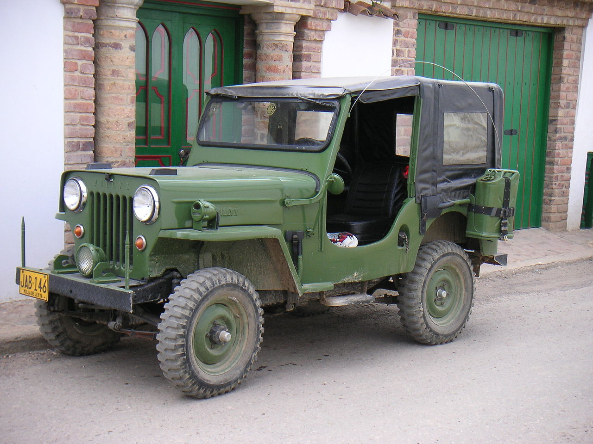

TodoTerrenos
 Un vehículo todoterreno es un tipo de vehículo diseñado para ser conducido en Todoterreno. Estos vehículos surgieron como necesidad en las guerras del principio del siglo XX, y fueron adaptados para uso civil y aprovechados para realizar travesías, vigilar zonas protegidas y moverse en terrenos ásperos o resbaladizos. Casi todos los vehículos todoterreno actuales incorporan tracción a las cuatro ruedas. Hoy en día son imprescindibles en zonas rurales, de alta montaña, desiertos y en general en cualquier lugar de difícil acceso para los vehículos «normales». No obstante, el uso de estos vehículos se extiende más allá del profesional, que sigue existiendo, por lo que hoy en día es el uso por ocio el más utilizado. Muchos todoterrenos cuentan también con una caja reductora, sistema indispensable cuando se emplean vehículos con motores de baja-media potencia, que permite multiplicar la fuerza del motor gracias al uso de engranajes especializados, para la superación de obstáculos complicados. También serán muy útiles unos ángulos delanteros o de ataque del coche, ventral (vientre del mismo) y trasero (salida) del coche, capaces de superar dichos obstáculos y pendientes empinadas. También es importante un chasis con refuerzos o placas para superar los esfuerzos y golpes en este tipo de usos, pudiendo ser un chasis de largueros y travesaños, o bien un monocasco. Cuando se quiera circular a través de terrenos extremadamente agrestes o irregulares, serán indispensables «diferenciales con bloqueo». Estos permiten que cuando una o más ruedas quedan en el aire o resbalan, las que están en terreno firme traccionen para que el vehículo pueda seguir avanzando, con los diferenciales bloqueados. Un vehículo deportivo utilitario (SUV) tradicional, es un automóvil todoterreno adaptado para un uso mayoritario en asfalto, pero con una capacidad de sorteo de obstáculos algo mayor. Algunos SUV no tienen caja reductora y pueden no tener tracción en las cuatro ruedas, su suspensión tiene recorrido menor (menos flexibilidad a las imperfecciones del terreno) y la altura del eje es a veces menor. También son menos resistentes ante el uso intensivo en condiciones adversas de conducción. Los vehículos deportivos utilitarios «compactos» tienen chasis monocasco y están basados en plataformas de tracción delantera convertidos en tracción integral, o en las cuatro ruedas. Hoy en día se utilizan vehículos deportivos utilitarios con tracción a las cuatro ruedas con fines de diversión y recreación. Además surgen actualmente algunos grupos y asociaciones que se dedican exclusivamente al «Off Road», deporte de aventura en el cual se emplean todoterrenos para sortear terrenos silvestres con fines recreativos. Muchos aficionados consideran a este deporte un estilo de vida.
Vehiculos todoterreno comerciales, militares y menos comunes
Las Fuerzas Armadas y los servicios públicos europeos han usado vehículos todo terreno Land Rover Defender, Haflinger, Pinzgauer, Volvo L3314, y Mercedes-Benz Unimog para el transporte todo terreno. El portugués UMM Alter es menos común. En América, la norma es usar camionetas grandes y potentes tipo pick-up o SUV, tales como la Ford F-150 o la Chevrolet Suburban. El mercado militar para vehículos todoterreno solía ser grande, pero, desde la caída del Cortina de Hierro en la década de 1990, ha cesado hasta cierto punto. El Jeep estadounidense, desarrollado durante la Segunda Guerra Mundial, acuñó la palabra que muchas personas utilizan para cualquier tipo de vehículo ligero todo terreno. En Estados Unidos, el sucesor del Jeep desde la década de 1980 fue el AM General HMMWV. El bloque soviético utilizó el GAZ-69 y UAZ-469 en roles similares. En países montañosos como México o Perú, el relieve accidentado en el cual se desarrollan las actividades del sector productivo suele traducirse en un mercado próspero para los vehículos todo terreno, siendo ahí comunes las camionetas pick-up grandes por su capacidad de mover cargas ligeras por terrenos accidentados.